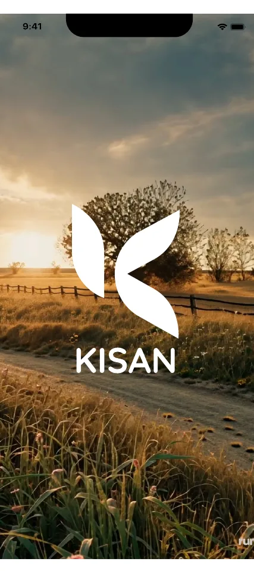
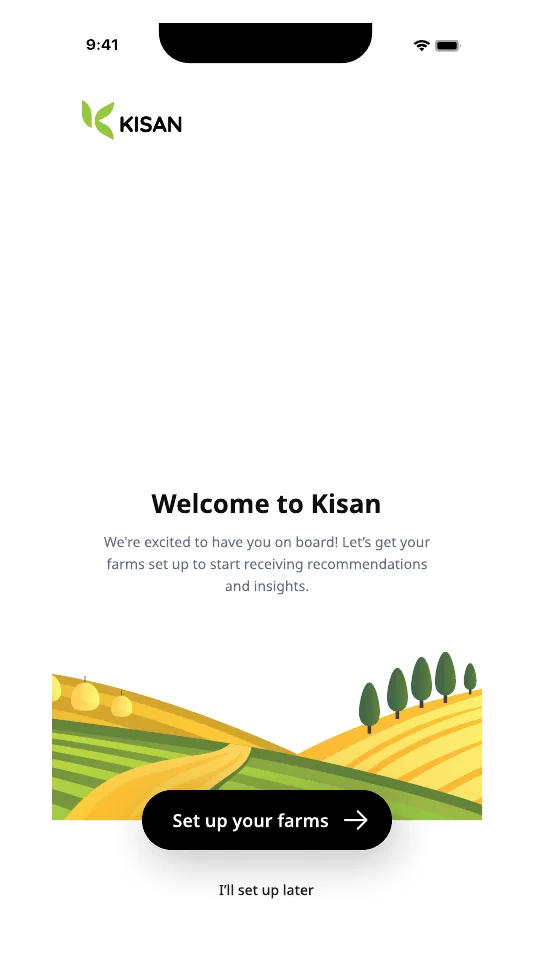

the app.

the problem.
Unpredictable weather, changing prices, old methods.
Farmers plan crops around weather they can't predict and sell into prices they can't see. Most of the tools out there weren't built for them, or for their language.

competitors.
One app for five jobs.
We compared Kisan with agritech apps like DeHaat and AgroStar on crop recommendations, market prices, weather, tips and an AI chat. Each covered part of the list. Kisan covers all five.

onboarding.
Set up a farm in two steps.




dashboard.
What a farmer checks every day, on one screen.
Weather for the farm, the farms themselves, crop prices, top-selling crops nearby and a daily tip.

- Weather for the farm's location, hour by hour.
- The farmer's own farms, one card each.
- Crop prices per quintal, with the recent change.
flows.
Mapped before designed.
We mapped the main journeys from the dashboard first: weather, my farms, market view and tips. Screens came after.